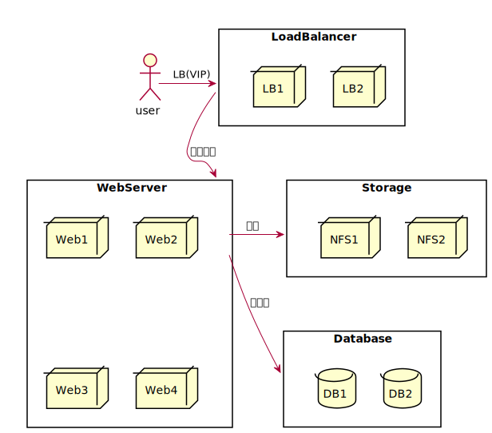

下载 Google-PinYin
在Ubuntu 下，谷歌拼音输入法是基于Fcitx输入法的。因此，首先安装Fcitx。
sudo apt install fcitx
配置Fcitx
im-config
安装谷歌拼音输入法（Google Pinyin）
sudo apt install fcitx-googlepinyin
安装后运行如下命令配置谷歌拼音输入法
fcitx-config-gtk3
Wechat Install
安装 Deepin Repository
wget -O- https://deepin-wine.i-m.dev/setup.sh | sh
安装微信
sudo apt install com.qq.weixin.deepin
解决统信应用解压失败的问题
sudo vim /opt/deepinwine/tools/run_v4.sh
# 找到下面这一行
7z x "$APPDIR/$APPTAR" -o"$1"
# 替换为
7z x "$APPDIR/$APPTAR" -o"$1" || true
卸载微信
sudo apt remove com.qq.weixin.deepin
删除 Deepin Repository
sudo rm /etc/apt/sources.d.list/deepin-wine.i-m.dev.list
下载 Clash-Verge
clash-verge项目地址
https://github.com/clash-verge-rev/clash-verge-rev
解决"clash-verge 依赖于 libwebkit2gtk-4.0-37."问题
sudo vim /etc/apt/sources.list.d/ubuntu.sources
# 添加以下内容
Types: deb
URIs: http://br.archive.ubuntu.com/ubuntu/
Suites: jammy
Components: main restricted universe multiverse
Signed-By: /usr/share/keyrings/ubuntu-archive-keyring.gpg
sudo apt update
解决 clash-verge 启动不显示窗口的问题
vim /usr/share/applications/clash-verge.desktop
# 将 Exec 改为：
Exec=env WEBKIT_DISABLE_COMPOSITING_MODE=1 clash-verge
下载 Docker
下载 Docker 的官方GPG密钥：
sudo apt-get update
sudo apt-get install ca-certificates curl
sudo install -m 0755 -d /etc/apt/keyrings
sudo curl -fsSL https://download.docker.com/linux/ubuntu/gpg -o /etc/apt/keyrings/docker.asc
sudo chmod a+r /etc/apt/keyrings/docker.asc
添加 Docker 的官方仓库
echo \
"deb [arch=$(dpkg --print-architecture) signed-by=/etc/apt/keyrings/docker.asc] https://download.docker.com/linux/ubuntu \
$(. /etc/os-release && echo "$VERSION_CODENAME") stable" | \
sudo tee /etc/apt/sources.list.d/docker.list > /dev/null
更新软件包列表
sudo apt-get update
下载 Docker
sudo apt-get install docker-ce docker-ce-cli containerd.io docker-buildx-plugin docker-compose-plugin
破解 Pycharm
编辑配置文件
vim /pycharm/install/path/bin/pycharm64.vmoptions
添加以下内容
-javaagent:/jar-package/path/jetbra/ja-netfilter.jar=jetbrains
--add-opens=java.base/jdk.internal.org.objectweb.asm=ALL-UNNAMED
--add-opens=java.base/jdk.internal.org.objectweb.asm.tree=ALL-UNNAMED
激活码
EUWT4EE9X2-eyJsaWNlbnNlSWQiOiJFVVdUNEVFOVgyIiwibGljZW5zZWVOYW1lIjoic2lnbnVwIHNjb290ZXIiLCJhc3NpZ25lZU5hbWUiOiIiLCJhc3NpZ25lZUVtYWlsIjoiIiwibGljZW5zZVJlc3RyaWN0aW9uIjoiIiwiY2hlY2tDb25jdXJyZW50VXNlIjpmYWxzZSwicHJvZHVjdHMiOlt7ImNvZGUiOiJQU0kiLCJmYWxsYmFja0RhdGUiOiIyMDI1LTA4LTAxIiwicGFpZFVwVG8iOiIyMDI1LTA4LTAxIiwiZXh0ZW5kZWQiOnRydWV9LHsiY29kZSI6IlBDIiwiZmFsbGJhY2tEYXRlIjoiMjAyNS0wOC0wMSIsInBhaWRVcFRvIjoiMjAyNS0wOC0wMSIsImV4dGVuZGVkIjpmYWxzZX0seyJjb2RlIjoiUFBDIiwiZmFsbGJhY2tEYXRlIjoiMjAyNS0wOC0wMSIsInBhaWRVcFRvIjoiMjAyNS0wOC0wMSIsImV4dGVuZGVkIjp0cnVlfSx7ImNvZGUiOiJQV1MiLCJmYWxsYmFja0RhdGUiOiIyMDI1LTA4LTAxIiwicGFpZFVwVG8iOiIyMDI1LTA4LTAxIiwiZXh0ZW5kZWQiOnRydWV9LHsiY29kZSI6IlBDV01QIiwiZmFsbGJhY2tEYXRlIjoiMjAyNS0wOC0wMSIsInBhaWRVcFRvIjoiMjAyNS0wOC0wMSIsImV4dGVuZGVkIjp0cnVlfV0sIm1ldGFkYXRhIjoiMDEyMDIyMDkwMlBTQU4wMDAwMDUiLCJoYXNoIjoiVFJJQUw6MzUzOTQ0NTE3IiwiZ3JhY2VQZXJpb2REYXlzIjo3LCJhdXRvUHJvbG9uZ2F0ZWQiOmZhbHNlLCJpc0F1dG9Qcm9sb25nYXRlZCI6ZmFsc2V9-FT9l1nyyF9EyNmlelrLP9rGtugZ6sEs3CkYIKqGgSi608LIamge623nLLjI8f6O4EdbCfjJcPXLxklUe1O/5ASO3JnbPFUBYUEebCWZPgPfIdjw7hfA1PsGUdw1SBvh4BEWCMVVJWVtc9ktE+gQ8ldugYjXs0s34xaWjjfolJn2V4f4lnnCv0pikF7Ig/Bsyd/8bsySBJ54Uy9dkEsBUFJzqYSfR7Z/xsrACGFgq96ZsifnAnnOvfGbRX8Q8IIu0zDbNh7smxOwrz2odmL72UaU51A5YaOcPSXRM9uyqCnSp/ENLzkQa/B9RNO+VA7kCsj3MlJWJp5Sotn5spyV+gA==-MIIETDCCAjSgAwIBAgIBDTANBgkqhkiG9w0BAQsFADAYMRYwFAYDVQQDDA1KZXRQcm9maWxlIENBMB4XDTIwMTAxOTA5MDU1M1oXDTIyMTAyMTA5MDU1M1owHzEdMBsGA1UEAwwUcHJvZDJ5LWZyb20tMjAyMDEwMTkwggEiMA0GCSqGSIb3DQEBAQUAA4IBDwAwggEKAoIBAQCUlaUFc1wf+CfY9wzFWEL2euKQ5nswqb57V8QZG7d7RoR6rwYUIXseTOAFq210oMEe++LCjzKDuqwDfsyhgDNTgZBPAaC4vUU2oy+XR+Fq8nBixWIsH668HeOnRK6RRhsr0rJzRB95aZ3EAPzBuQ2qPaNGm17pAX0Rd6MPRgjp75IWwI9eA6aMEdPQEVN7uyOtM5zSsjoj79Lbu1fjShOnQZuJcsV8tqnayeFkNzv2LTOlofU/Tbx502Ro073gGjoeRzNvrynAP03pL486P3KCAyiNPhDs2z8/COMrxRlZW5mfzo0xsK0dQGNH3UoG/9RVwHG4eS8LFpMTR9oetHZBAgMBAAGjgZkwgZYwCQYDVR0TBAIwADAdBgNVHQ4EFgQUJNoRIpb1hUHAk0foMSNM9MCEAv8wSAYDVR0jBEEwP4AUo562SGdCEjZBvW3gubSgUouX8bOhHKQaMBgxFjAUBgNVBAMMDUpldFByb2ZpbGUgQ0GCCQDSbLGDsoN54TATBgNVHSUEDDAKBggrBgEFBQcDATALBgNVHQ8EBAMCBaAwDQYJKoZIhvcNAQELBQADggIBABqRoNGxAQct9dQUFK8xqhiZaYPd30TlmCmSAaGJ0eBpvkVeqA2jGYhAQRqFiAlFC63JKvWvRZO1iRuWCEfUMkdqQ9VQPXziE/BlsOIgrL6RlJfuFcEZ8TK3syIfIGQZNCxYhLLUuet2HE6LJYPQ5c0jH4kDooRpcVZ4rBxNwddpctUO2te9UU5/FjhioZQsPvd92qOTsV+8Cyl2fvNhNKD1Uu9ff5AkVIQn4JU23ozdB/R5oUlebwaTE6WZNBs+TA/qPj+5/we9NH71WRB0hqUoLI2AKKyiPw++FtN4Su1vsdDlrAzDj9ILjpjJKA1ImuVcG329/WTYIKysZ1CWK3zATg9BeCUPAV1pQy8ToXOq+RSYen6winZ2OO93eyHv2Iw5kbn1dqfBw1BuTE29V2FJKicJSu8iEOpfoafwJISXmz1wnnWL3V/0NxTulfWsXugOoLfv0ZIBP1xH9kmf22jjQ2JiHhQZP7ZDsreRrOeIQ/c4yR8IQvMLfC0WKQqrHu5ZzXTH4NO3CwGWSlTY74kE91zXB5mwWAx1jig+UXYc2w4RkVhy0//lOmVya/PEepuuTTI4+UJwC7qbVlh5zfhj8oTNUXgN0AOc+Q0/WFPl1aw5VV/VrO8FCoB15lFVlpKaQ1Yh+DVU8ke+rt9Th0BCHXe0uZOEmH0nOnH/0onD
ENV Variable Setting
In Linux, environment variables are used to store information that can be used by programs when they are executed. They play a important role in Linux system.
.bashrc 配置
# 设置shell命令查找
set -o vi
# 设置Ctrl+L清屏
bind -x '"\C-l":clear'
# helm complete
source <(helm completion bash)
source <(kubectl completion bash)
# alias kubectl & setting completion
alias k=kubectl
complete -o default -F __start_kubectl k
.vimrc 配置
autocmd BufNewFile *.sh exec ":call AddTitleForShell()"
function AddTitleForShell()
call append(0,"#!/bin/bash")
call append(1,"# **********************************************************")
call append(2,"# * Author : Burgess Leo")
call append(3,"# * Email : xiaoli@qiuqiu.com")
call append(4,"# * Create time : ".strftime("%Y-%m-%d %H:%M"))
call append(5,"# * Filename : ".expand("%:t"))
call append(6,"# * Description : ")
call append(7,"# **********************************************************")
endfunction
"默认显示行号
set nu
"默认显示当前光标所在行
"set cursorline
"可以使用鼠标改变位置
set mouse=a
"设置字典
set dictionary+=/usr/share/dict/words
.user-dirs.dirs 文件修改
修改文件内容
XDG_DESKTOP_DIR="$HOME/desktop"
XDG_DOCUMENTS_DIR="$HOME/document"
XDG_DOWNLOAD_DIR="$HOME/download"
XDG_MUSIC_DIR="$HOME/music"
XDG_PICTURES_DIR="$HOME/picture"
XDG_PUBLICSHARE_DIR="$HOME/public"
XDG_TEMPLATES_DIR="$HOME/template"
XDG_VIDEOS_DIR="$HOME/video"
更改家目录名称
mv 桌面/ desktop
mv 文档/ document
mv 下载/ download
mv 音乐/ music
mv 图片/ picture
mv 公共/ public
mv 模板/ template
mv 视频/ video
重启系统
reboot
All Kinds of Proxy Setting
In china, you can't access to the real Internet directly. So you have to use some proxy in some software.
配置系统代理
编辑文件
sudo vim /etc/profile.d/proxy.sh
# set proxy config via profie.d - should apply for all users
export http_proxy="http://10.10.1.10:8080/"
export https_proxy="http://10.10.1.10:8080/"
export ftp_proxy="http://10.10.1.10:8080/"
export no_proxy="127.0.0.1,localhost"
# For curl
export HTTP_PROXY="http://10.10.1.10:8080/"
export HTTPS_PROXY="http://10.10.1.10:8080/"
export FTP_PROXY="http://10.10.1.10:8080/"
export NO_PROXY="127.0.0.1,localhost"
添加权限
sudo chmod +x /etc/profile.d/proxy.sh
刷新环境变量
source /etc/profile.d/proxy.sh
查看环境变量进行确认是否生效
env | grep -i proxy
配置 Docker 代理
编辑文件
sudo vim /etc/systemd/system/docker.service.d/http-proxy.conf
添加以下内容
[Service]
Environment="HTTP_PROXY=http://127.0.0.1:7890"
Environment="HTTPS_PROXY=http://127.0.0.1:7890"
重载服务
sudo systemctl daemon-reload
sudo systemctl restart docker
配置容器代理
vim ~/.docker/config.json
{
"proxies":
{
"default":
{
"httpProxy": "http://172.17.0.1:7890",
"httpsProxy": "https://172.17.0.1:7890",
"noProxy": "*.<domain>,127.0.0.0/8"
}
}
}
配置 K3S 代理
-
/etc/systemd/system/k3s.service.env -
/etc/systemd/system/k3s-agent.service.env
HTTP_PROXY=http://your-proxy.example.com:8888
HTTPS_PROXY=http://your-proxy.example.com:8888
NO_PROXY=127.0.0.0/8,10.0.0.0/8,172.16.0.0/12,192.168.0.0/16
Useful Scripts
In Linux, you can use some scripts to do some repetitive tasks.
Node 版本控制
sudo vim hexo_start_stop.sh
sudo chmod +x hexo_start_stop.sh
#!/bin/bash
# 检查参数
if [ "$#" -ne 1 ]; then
echo "Usage: $0 start|stop"
exit 1
fi
# 定义变量
NODE_V12_DIR="/home/knight/node/node-v12/bin"
NODE_V20_DIR="/home/knight/node/node-v20/bin"
NODE_BIN="/usr/bin/node"
NODE_LOCAL_BIN="/usr/local/bin/node"
NPM_BIN="/usr/bin/npm"
NPM_LOCAL_BIN="/usr/local/bin/npm"
NPX_BIN="/usr/bin/npx"
NPX_LOCAL_BIN="/usr/local/bin/npx"
# HEXO_LOCAL_BIN="/usr/local/bin/hexo"
# 根据参数执行相应的操作
case "$1" in
start)
# 更新符号链接到 Node v12
sudo ln -sf "$NODE_V12_DIR/node" "$NODE_BIN"
sudo ln -sf "$NODE_V12_DIR/node" "$NODE_LOCAL_BIN"
sudo ln -sf "$NODE_V12_DIR/npm" "$NPM_BIN"
sudo ln -sf "$NODE_V12_DIR/npm" "$NPM_LOCAL_BIN"
sudo ln -sf "$NODE_V12_DIR/npx" "$NPX_BIN"
sudo ln -sf "$NODE_V12_DIR/npx" "$NPX_LOCAL_BIN"
# sudo ln -sf "$NODE_V12_DIR/hexo" "$HEXO_LOCAL_BIN"
echo "Node, NPM, and NPX links updated to Node v12."
;;
stop)
# 更新符号链接到 Node v20
sudo ln -sf "$NODE_V20_DIR/node" "$NODE_BIN"
sudo ln -sf "$NODE_V20_DIR/node" "$NODE_LOCAL_BIN"
sudo ln -sf "$NODE_V20_DIR/npm" "$NPM_BIN"
sudo ln -sf "$NODE_V20_DIR/npm" "$NPM_LOCAL_BIN"
sudo ln -sf "$NODE_V20_DIR/npx" "$NPX_BIN"
sudo ln -sf "$NODE_V20_DIR/npx" "$NPX_LOCAL_BIN"
# sudo rm -rf "$HEXO_LOCAL_BIN"
echo "Node, NPM, and NPX links updated to Node v20."
;;
*)
echo "Invalid argument. Usage: $0 start|stop"
exit 1
;;
esac
exit 0
Docker 代理启停
sudo vim docker_proxy_start_stop.sh
sudo chmod +x docker_proxy_start_stop.sh
#!/bin/bash
# Define paths
CONF_FILE="/etc/systemd/system/docker.service.d/http-proxy.conf"
BACKUP_CONF_FILE="/etc/systemd/system/docker.service.d/http-proxy.conf.bak"
# Function to enable proxy
enable_proxy() {
# Check if the current configuration file is already the backup
if [ -f "$CONF_FILE" ] && cmp --silent "$CONF_FILE" "$BACKUP_CONF_FILE"; then
echo "Proxy configuration is already enabled."
else
# Move the backup configuration to the active configuration file
sudo mv "$BACKUP_CONF_FILE" "$CONF_FILE"
# Reload systemd manager configuration
sudo systemctl daemon-reload
# Restart Docker service
sudo systemctl restart docker.service
echo "Proxy configuration enabled."
fi
}
# Function to disable proxy
disable_proxy() {
# Check if the current configuration file is the original
if [ -f "$CONF_FILE" ] && ! cmp --silent "$CONF_FILE" "$BACKUP_CONF_FILE"; then
# Move the active configuration file to the backup
sudo mv "$CONF_FILE" "$BACKUP_CONF_FILE"
# Reload systemd manager configuration
sudo systemctl daemon-reload
# Restart Docker service
sudo systemctl restart docker.service
echo "Proxy configuration disabled."
else
echo "Proxy configuration is already disabled."
fi
}
# Check the command argument
case $1 in
start)
enable_proxy
;;
stop)
disable_proxy
;;
*)
echo "Usage: $0 {start|stop}"
exit 1
;;
esac
exit 0
Docker 镜像上传私有仓库
Tips：下载镜像时，需要开启 Docker 代理。上传到私有仓库时，需要关闭 Docker 代理。
提取镜像列表
从 Helm 的 values 文件中获取所需的镜像，保存在 images.tmp 文件中。
使用方法：get_images.sh values-nginx.yaml
#!/bin/bash
# **********************************************************
# * Author : Burgess Leo
# * Email : liuxp731@qq.com
# * Create time : 2024-09-13 16:06
# * Filename : get_images.sh
# * Description : Extracts Docker image names and tags from a YAML file and writes them to images.tmp
# **********************************************************
# 检查是否传入文件名作为参数
if [ "$#" -ne 1 ]; then
echo "用法: $0 <values-nginx.yaml>"
exit 1
fi
# 从命令行参数获取文件名
input_file="$1"
# 清空或创建 images.tmp 文件
> images.tmp
while read -r line; do
if [[ $line == *"repository:"* ]]; then
repository=$(echo $line | cut -d':' -f2 | xargs)
elif [[ $line == *"tag:"* ]]; then
tag=$(echo $line | cut -d':' -f2 | xargs)
# 将结果写入 images.tmp 文件
echo "$repository:$tag" >> images.tmp
fi
done < "$input_file"
拉取镜像
获取 images.tmp 文件所有的镜像。如果你有别的文件，也可以使用别的文件，按照每行一个镜像名的格式进行书写即可。
使用方法：pull_images.sh images.tmp
#!/bin/bash
# **********************************************************
# * Author : Burgess Leo
# * Email : liuxp731@qq.com
# * Create time : 2024-09-13 16:34
# * Filename : pull_images.sh
# * Description : Pull images from Internet
# **********************************************************
# 检查是否传入文件名作为参数
if [ "$#" -ne 1 ]; then
echo "用法: $0 <images.tmp>"
exit 1
fi
# 从命令行参数获取文件名
input_file="$1"
# 读取文件并拉取每个镜像
while read -r image; do
if [ -n "$image" ]; then
echo "正在拉取镜像: $image"
docker pull "$image"
fi
done < "$input_file"
将镜像改名
改名主要是为 docker tag 做准备，将改名后的镜像名保存在 new_images.tmp 文件中，可以修改脚本的private_registry变量来修改私有仓库地址。
使用方法：update_images.sh images.tmp
#!/bin/bash
# **********************************************************
# * Author : Burgess Leo
# * Email : liuxp731@qq.com
# * Create time : 2024-09-13 16:06
# * Filename : update_images.sh
# * Description : Updates image paths from a specified file and outputs to new_images.tmp
# **********************************************************
# 检查是否传入文件名作为参数
if [ "$#" -ne 1 ]; then
echo "用法: $0 <images.tmp>"
exit 1
fi
# 从命令行参数获取文件名
input_file="$1"
output_file="new_images.tmp"
private_registry="192.167.3.18/"
# 创建或清空输出文件
> "$output_file"
# 处理文件内容
while IFS= read -r line; do
# 检查行是否为空
if [[ -n "$line" ]]; then
# 在镜像名称前加上私有仓库地址
echo "${private_registry}${line}" >> "$output_file"
fi
done < "$input_file"
重命名 Docker 镜像
使用Docker tag命令重命名镜像，保存在机器中，并且将新的镜像名保存在 new_images.tmp 文件中。
使用方法：tag_images.sh images.tmp
#!/bin/bash
# **********************************************************
# * Author : Burgess Leo
# * Email : liuxp731@qq.com
# * Create time : 2024-09-13 16:06
# * Filename : tag_images.sh
# * Description : Tags Docker images based on a specified file
# **********************************************************
# 检查参数数量
if [ "$#" -ne 1 ]; then
echo "用法: $0 <images.tmp>"
exit 1
fi
# 从命令行参数获取文件名
input_file="$1"
output_file="new_images.tmp"
private_registry="192.167.3.18/"
# 创建或清空输出文件
> "$output_file"
# 处理文件内容并执行 docker tag 命令
while read -r original_image; do
# 检查行是否为空
if [[ -n "$original_image" ]]; then
# 组合新的镜像名称
new_image_name="${private_registry}${original_image}"
# 输出正在标记的镜像信息
echo "正在标记镜像: docker tag $original_image $new_image_name"
# 执行 docker tag 命令
docker tag "$original_image" "$new_image_name"
# 将新的镜像名称写入输出文件
echo "$new_image_name" >> "$output_file"
fi
done < "$input_file"
echo "所有镜像已成功标记并保存到 $output_file"
推送镜像
推送镜像到私有仓库，使用脚本时，请将private_registry变量修改为私有仓库地址。
使用方法：push_images.sh new_images.tmp
#!/bin/bash
# **********************************************************
# * Author : Burgess Leo
# * Email : liuxp731@qq.com
# * Create time : 2024-09-14 09:01
# * Filename : push_images.sh
# * Description : Push Docker images to a registry
# **********************************************************
# 检查是否传入文件名作为参数
if [ "$#" -ne 1 ]; then
echo "用法: $0 <images.tmp>"
exit 1
fi
# 从命令行参数获取文件名
images_file="$1"
target_registry="192.167.3.18/library/"
# 遍历images.tmp文件中的每一行
while IFS= read -r line; do
# 检查行是否为空
if [ -z "$line" ]; then
continue
fi
# 打印操作信息
echo "正在推送镜像: $line"
# 推送镜像
docker push "$line"
done < "$images_file"
echo "所有指定的镜像已被推送。"
删除镜像
从本地删除已经上传的镜像。
使用方法：delete_images.sh new_images.tmp
#!/bin/bash
# **********************************************************
# * Author : Burgess Leo
# * Email : liuxp731@qq.com
# * Create time : 2024-09-14 09:02
# * Filename : delete_images.sh
# * Description : Delete images that pushed
# **********************************************************
# 检查是否有参数传递
if [ $# -ne 1 ]; then
echo "Usage: $0 <path-to-file>"
exit 1
fi
# 指定包含镜像名称的文件路径
images_file="$1"
# 检查文件是否存在
if [ ! -f "$images_file" ]; then
echo "Error: File '$images_file' not found."
exit 1
fi
# 逐行读取文件中的镜像名称
while IFS= read -r image; do
# 删除镜像，忽略不存在的镜像
if docker rmi "$image" &>/dev/null; then
echo "Image $image has been deleted."
else
echo "Image $image does not exist or could not be deleted."
fi
done < "$images_file"
echo "All listed images have been processed."
ALL IN ONE
将所有的脚本整合成一个脚本，方便使用。
#!/bin/bash
# **********************************************************
# * Author : Burgess Leo
# * Email : liuxp731@qq.com
# * Create time : 2024-09-13 16:06
# * Filename : all_in_one.sh
# * Description : Pull images
# **********************************************************
# 欢迎信息
echo "欢迎使用 Docker 镜像管理脚本！"
echo ""
# 菜单函数
print_menu() {
echo "*********************************************************"
echo "* *"
echo "* 1. Get images from Helm yaml files. *"
echo "* *"
echo "* 2. Pull images from docker hub to local. *"
echo "* *"
echo "* 3. Docker tag images you need to change. *"
echo "* *"
echo "* 4. Push images to your private docker registry. *"
echo "* *"
echo "* 5. Delete images from local. *"
echo "* *"
echo "* 6. cat images.tmp. *"
echo "* *"
echo "* 7. cat new_images.tmp. *"
echo "* *"
echo "* 8. About. *"
echo "* *"
echo "* 0. Exit. *"
echo "* *"
echo "*********************************************************"
}
# 主循环
while true; do
print_menu
read -p "请输入功能数字: " choice
case $choice in
1)
read -p "请输入 Helm yaml 文件路径: " yaml_file
if [ ! -f "$yaml_file" ]; then
echo "错误: 文件 '$yaml_file' 不存在."
else
> images.tmp
while read -r line; do
if [[ $line == *"repository:"* ]]; then
repository=$(echo $line | cut -d':' -f2 | xargs)
elif [[ $line == *"tag:"* ]]; then
tag=$(echo $line | cut -d':' -f2 | xargs)
echo "$repository:$tag" >> images.tmp
fi
done < "$yaml_file"
echo "已从 '$yaml_file' 中提取镜像并保存到 'images.tmp'，由于 Helm yaml 文件可能包含重复的镜像以及失效的 Tag 名称，请手动检查 images.tmp 文件。"
fi
;;
2)
read -p "请输入 images.tmp 文件路径 (默认: images.tmp): " images_file
images_file=${images_file:-images.tmp} # 设置默认值
if [ ! -f "$images_file" ]; then
echo "错误: 文件 '$images_file' 不存在."
else
while IFS= read -r image || [ -n "$image" ]; do # 修复读取逻辑以处理没有换行的情况
if [ -n "$image" ]; then
echo "正在拉取镜像: $image"
docker pull "$image"
fi
done < "$images_file"
echo "所有镜像已成功拉取."
fi
;;
3)
read -p "请输入 images.tmp 文件路径 (默认: images.tmp): " images_file
images_file=${images_file:-images.tmp} # 设置默认值
if [ ! -f "$images_file" ]; then
echo "错误: 文件 '$images_file' 不存在."
else
output_file="new_images.tmp"
header="192.167.3.18/"
> "$output_file"
while IFS= read -r original_image || [ -n "$original_image" ]; do # 修复读取逻辑以处理没有换行的情况
# 在每一行前添加私有镜像仓库地址
new_image_name="${header}${original_image}"
echo "正在标记镜像: docker tag $original_image $new_image_name"
docker tag "$original_image" "$new_image_name"
echo "$new_image_name" >> "$output_file"
done < "$images_file"
if [ -s "$output_file" ]; then # 检查输出文件是否非空
echo "所有镜像已成功标记并保存到 '$output_file'."
else
echo "警告: '$output_file' 文件为空，未能标记任何镜像."
fi
fi
;;
4)
read -p "请输入 new_images.tmp 文件路径 (默认: new_images.tmp): " images_file
images_file=${images_file:-new_images.tmp} # 设置默认值
if [ ! -f "$images_file" ]; then
echo "错误: 文件 '$images_file' 不存在."
else
while IFS= read -r line || [ -n "$line" ]; do # 修复读取逻辑以处理没有换行的情况
if [ -z "$line" ]; then continue; fi
echo "正在推送镜像: $line"
docker push "$line"
done < "$images_file"
echo "所有指定的镜像已被推送."
fi
;;
5)
read -p "请输入包含要删除的镜像名称的文件路径 (默认: new_images.tmp): " images_file
images_file=${images_file:-new_images.tmp} # 设置默认值
if [ ! -f "$images_file" ]; then
echo "错误: 文件 '$images_file' 不存在."
else
while IFS= read -r image || [ -n "$image" ]; do # 修复读取逻辑以处理没有换行的情况
if docker rmi "$image" &>/dev/null; then
echo "镜像 $image 已被删除."
else
echo "镜像 $image 不存在或无法删除."
fi
done < "$images_file"
echo "所有列出的镜像已被处理."
fi
;;
6)
cat images.tmp
;;
7)
cat new_images.tmp
;;
8)
# 打印关于信息
cat << 'EOF'
_..._ 666
.' '. _
/ .-""-\ _/ \
.-| /:. | | |
| \ |:. /.-'-./
| .-'-;:__.' =/
.'= *=|NASA _.='
/ _. | ;
;-.-'| \ |
/ | \ _\ _\
\__/'._;. \==' ==\
\ \ |
/ / /
/-._/-._/
lxp \ `\ \
`-._/._/
EOF
;;
0)
echo "退出程序。再见！"
exit 0
;;
*)
echo "无效的选择，请重新输入."
;;
esac
# 打印分隔行以提高可读性，并重新显示菜单
printf "\n\n\n"
done
关闭盖子禁用休眠
编辑配置文件
sudo gedit /etc/systemd/logind.conf
修改这一行的值
HandleLidSwitch=ignore
重启服务
sudo systemctl restart systemd-logind
WindTerm 桌面图标
[Desktop Entry]
Name=WindTerm
Comment=A professional cross-platform SSH/Sftp/Shell/Telnet/Serial terminal
GenericName=Connect Client
Exec=/home/knight/windTerm/WindTerm_2.6.1/WindTerm
Type=Application
Icon=/home/knight/windTerm/WindTerm_2.6.1/windterm.png
StartupNotify=false
StartupWMClass=Code
Categories=Application;Development
Actions=new-empty-window
Keywords=windterm
[Desktop Action new-empty-window]
Name=New Empty Window
Exec=/home/knight/windTerm/WindTerm_2.6.1/WindTerm
Icon=/home/knight/windTerm/WindTerm_2.6.1/windterm.png
使用 frp
项目链接
https://github.com/fatedier/frp
SSH 服务
服务器配置
vim frps.toml
bindPort = 5432 # frp 建立通讯的端口
auth.token = "123456"
客户端配置
vim frpc.toml
serverAddr = "123.00.00.01"
serverPort = 5432 # frp 建立通讯的端口
auth.token = "123456"
[[proxies]]
name = "ssh"
type = "tcp"
localIP = "127.0.0.1"
localPort = 22
remotePort = 10086 # frp 映射的端口，VPS需要打开的端口
FTP 服务
服务器配置
vim frps.toml
bindPort = 5432
auth.token = "123456"
客户端配置
vim frpc.toml
serverAddr = "123.00.00.01"
serverPort = 5432
auth.token = "123456"
[[proxies]]
name = "test_static_file"
type = "tcp"
localPort = 21
remotePort = 10086
[proxies.plugin]
type = "static_file"
# 本地文件目录，对外提供访问
localPath = "/your/local/path"
# URL 中的前缀，将被去除，保留的内容即为要访问的文件路径
stripPrefix = "static"
httpUser = "user"
httpPassword = "password"
systemctl 配置
- frps | 服务器配置
sudo vim /etc/systemd/system/frps.service
[Unit]
# 服务名称，可自定义
Description = frp server
After = network.target syslog.target
Wants = network.target
[Service]
Type = simple
# 启动frps的命令，需修改为您的frps的安装路径
ExecStart = /root/frp/frps -c /root/frp/config.toml
[Install]
WantedBy = multi-user.target
重载服务
sudo systemctl daemon-reload
sudo systemctl enable --now frps
- frpc | 客户端配置
sudo vim /etc/systemd/system/frpc.service
[Unit]
Description=FRPC Client Service
After=network.target
[Service]
User=knight
Group=knight
Type=simple
ExecStart=/home/knight/frp/frpc -c /home/knight/frp/config.toml
Restart=on-failure
RestartSec=5s
StandardOutput=syslog
StandardError=syslog
SyslogIdentifier=frpc
[Install]
WantedBy=multi-user.target
重载服务
sudo systemctl daemon-reload
sudo systemctl enable --now frpc
asciiquarium 终端动画
Ubuntu 配置
sudo apt-get install -y perl libcurses-perl
tar -xf Term-Animation-2.4.tar.gz
tar -xf asciiquarium.tar.gz
cd Term-Animation-2.4/ && perl Makefile.PL && make && sudo make install
cd asciiquarium_1.1/
cp asciiquarium /usr/local/bin
sudo chmod +x /usr/local/bin/asciiquarium
asciiquarium
Centos 配置
cd /opt
yum install -y wget
wget http://search.cpan.org/CPAN/authors/id/K/KB/KBAUCOM/Term-Animation-2.4.tar.gz
tar xf Term-Animation-2.4.tar.gz
yum install perl-Curses.x86_64 -y
yum install perl-ExtUtils-CBuilder perl-ExtUtils-MakeMaker -y
cd /opt/Term-Animation-2.4/ && perl Makefile.PL
make
make install
cd /opt
wget http://www.robobunny.com/projects/asciiquarium/asciiquarium.tar.gz
tar -zxvf asciiquarium.tar.gz
cd asciiquarium_1.1/
cp asciiquarium /usr/local/bin
chmod +x /usr/local/bin/asciiquarium
asciiquarium
kns 命名空间锁定
下载 fzf
sudo apt install fzf
编辑 kns 脚本
vim kns
#!/bin/sh
# quick Kubernetes Namespace Switcher
# ISC Blendle, 2017
set -eu
if [ ! -x "$(which kubectl 2>/dev/null)" ]; then
echo "please install: kubectl (https://kubernetes.io/docs/tasks/kubectl/install/)" >&2
exit 1
fi
if [ ! -x "$(which fzf 2>/dev/null)" ]; then
echo "please install: fzf (https://github.com/junegunn/fzf)" >&2
exit 1
fi
current="$(kubectl config current-context)"
namespace="$(kubectl config view -o jsonpath="{.contexts[?(@.name == '${current}')].context.namespace}")"
if [ -z "$namespace" ]; then
namespace="default"
fi
selected=$( (kubectl get namespaces -o=jsonpath="{.items[?(@.metadata.name!='$namespace')].metadata.name}" | xargs -n 1; echo $namespace ) | fzf -0 -1 --tac -q "${1:-""}" --prompt "$current> ")
if [ -n "$selected" ]; then
kubectl config set-context "$current" "--namespace=$selected" >/dev/null
echo "Set context namespace to \"$selected\""
fi
添加权限
chmod +x kns
sudo mv kns /usr/local/bin/kns
VSCODE 远程连接主机
设置免密登录
ssh-keygen -t rsa
ssh-copy-id -i ~/.ssh/id_rsa.pub root@192.168.1.1
添加config配置文件
vim ~/.ssh/config
# 添加以下内容
Host ali
HostName 192.168.1.1
User root
IdentityFile ~/.ssh/id_rsa
Port 22
下载VSCode插件
点击VSCode左下角图标，形似“><”，点击会自动安装。
Ollama 服务发现
编辑文件
sudo vim /etc/systemd/system/ollama.service
在[Service]下添加
[Service]
Environment="OLLAMA_HOST=0.0.0.0"
重载服务
sudo systemctl daemon-reload
sudo systemctl restart ollama
Some Funny Docker Projects
I collected some funny docker projects here. If you want to try, confirm you install docker and docker-compose first.

Openweb-UI
open-webui 官网
Docker 部署
version: '3'
services:
open-webui:
image: ghcr.io/open-webui/open-webui:main
container_name: open-webui
ports:
- "3000:8080"
volumes:
- open-webui:/app/backend/data
# restart: always
extra_hosts:
- "host.docker.internal:host-gateway"
volumes:
open-webui:
docker部署open-webui需要配合ollama 服务发现使用，否则会出现open-webui无法识别到本地模型的情况。
Yesplaymusic
yesplaymusic 官网
https://github.com/qier222/YesPlayMusic
Docker 部署
version: '3.9'
services:
yesplaymusic:
image: fogforest/yesplaymusic
container_name: yesplaymusic
restart: always
ports:
- "7900:80"